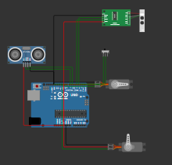

Funcionamiento del Prototipo
Conoce el ciclo operativo automatizado y la tecnología de hardware que hace posible TecnoBasurin.
Núcleo de Procesamiento

Vista del microcontrolador y las conexiones principales del sistema automatizado.
Funcionamiento Operativo del Prototipo
El funcionamiento del contenedor automatizado se estructura en un ciclo de cuatro etapas principales:
1. Detección inicial
El usuario deposita un residuo electrónico en la bandeja de entrada. La presencia física del objeto es detectada de forma óptica por los sensores infrarrojos tipo detector de obstáculos.
2. Análisis y sensado
El sistema evalúa las características físicas del objeto introducido. Para ello, la celda de carga de 5 kg combinada con el módulo HX711 miden el peso del elemento, mientras que el sensor inductivo de metal con salida NPN identifica si se trata de un componente metálico o conductor.
3. Clasificación y actuación mecánica
El microcontrolador Arduino UNO R3 procesa la información recopilada por los sensores y acciona de forma automática los servomotores MG996R y el motorreductor DC de 12 V (gestionado mediante el driver BTS7960) para abrir la compuerta correspondiente al compartimento de destino en menos de 3 segundos. Simultáneamente, el sensor ultrasónico HC-SR04 monitorea de manera constante el nivel de llenado interno para evitar desbordes.
4. Retroalimentación y monitoreo
La pantalla LCD y los LEDs indicadores muestran mensajes de estado en tiempo real al usuario ("Procesando", "Deposite aquí", o alertas de capacidad llena). Asimismo, los datos estadísticos de uso se registran de manera interna para su visualización en la plataforma web educativa.
Definición y Descripción de Componentes del Sistema
-
Arduino UNO R3: Microcontrolador programable que actúa como el cerebro del sistema, encargado de procesar las señales de los sensores y enviar las órdenes de control a los motores y pantallas.
-
Celda de carga (5 kg, tipo barra): Transductor que mide peso o fuerza aplicando el principio de deformación por resistencia eléctrica, convirtiendo la carga mecánica del residuo en una señal eléctrica.
-
Módulo HX711: Conversor analógico-digital (ADC) de alta precisión diseñado específicamente para celdas de carga; amplifica la débil señal analógica de la celda y la digitaliza para que el microcontrolador la lea.
-
Servo para bandeja MG996R: Actuador electromecánico con engranajes metálicos encargado de mover o inclinar la bandeja inicial de recepción de forma precisa.
-
Servos clasificadores (2 unidades MG996R): Actuadores de alta resistencia y torque que permiten abrir y posicionar con exactitud las compuertas de los compartimentos internos.
-
Motorreductor DC (12 V): Motor de corriente continua acoplado a una caja de reducción mecánica que disminuye la velocidad (60–100 RPM) para incrementar la fuerza de arrastre en los mecanismos del tacho.
-
Driver para motor BTS7960: Circuito integrado de alta potencia (puente H) que permite controlar de forma segura la velocidad y el sentido de giro del motor DC mediante modulación de pulsos.
-
Sensor ultrasónico HC-SR04: Dispositivo que mide distancia mediante el envío de ondas sonoras de alta frecuencia, utilizado para calcular el nivel de llenado de los depósitos internos.
-
Sensor de presencia (2 Infrarrojos tipo detector de obstáculos): Sensores ópticos que detectan la interrupción o reflexión de un haz de luz para confirmar la llegada o el paso de un residuo en la entrada.
-
Sensor de metal inductivo (NPN): Dispositivo que detecta objetos metálicos sin contacto físico generando un campo electromagnético, clave para diferenciar componentes electrónicos metálicos con una adaptación eléctrica segura.
-
Fuente para motor (12 V): Suministro eléctrico dedicado a entregar la tensión y corriente necesarias para el funcionamiento del motorreductor y etapas de potencia.
-
Fuente regulada para servos (5–6 V, 5A+): Fuente de alta corriente diseñada exclusivamente para alimentar los servomotores, evitando caídas de tensión que puedan reiniciar o colgar al microcontrolador.
-
Protoboard (400 u 830 puntos): Placa de pruebas con perforaciones interconectadas que permite armar circuitos eléctricos y electrónicos de manera provisional sin necesidad de soldar.
-
Cables Dupont (Macho-macho / Macho-hembra): Cables flexibles con terminales de pin diseñados para realizar conexiones rápidas y seguras entre los módulos y la placa de desarrollo.
-
Cables eléctricos: Conductores de mayor sección aptos para soportar el flujo de corriente elevado requerido en la alimentación general, la fuente y los motores.
-
Resistencias y LEDs: Componentes auxiliares utilizados para limitar corrientes, proteger entradas/salidas y proveer indicadores lumínicos de estado en el circuito.
-
Interruptor general: Elemento de corte manual ubicado en la entrada de alimentación para encender o apagar de forma segura todo el sistema eléctrico del prototipo.